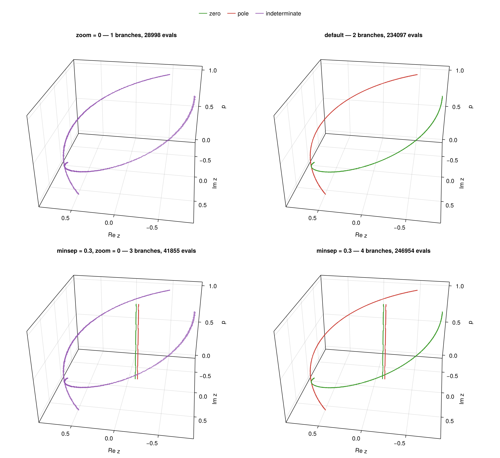

MeromorphicLoci.jl
Find the zeros and poles of a meromorphic function of complex z inside a region — at fixed parameters, or as loci z*(p) traced over m ≥ 0 parameters p.
findzeros(f, zdomain, alg) # (; points, windings, converged, unresolved, nevals, …)
findpoles(f, zdomain, alg) # same for poles
findzeropoles(f, zdomain, alg) # both, told apart by the sign of `windings`
findloci(f, zdomain, pdomain, alg) # loci z*(p)The point finders take f(z) and return
points— each distinct zero or pole found, sorted by real then imaginary part;windings— the winding offaround each: its multiplicity, negative for a pole, or the count of simple ones closer together than the algorithm resolves;converged— whether each was polished to the tolerance of the keywordpolish(Muller();nothingkeeps the algorithm's own estimates). Only points of winding ±1 are polished: a polish would put fused simple ones on one, and rounding inflimits its accuracy at a multiple one;unresolved— places where a zero or pole was detected but its kind could not be told;nevals— the evaluations offspent;
and fields particular to the algorithm. findzeropoles costs about as much as findzeros or findpoles alone.
findloci takes f(p...) returning the function of z, and returns a Survey of Branches (below).
Two algorithms:
ArgumentPrinciple(; zres, …)— adaptive cells over(z, p...), refined only near the loci via Cauchy's argument principle. z is refined tozres;ponly as finely as the loci move. Loci come out connected and classified.AAA(; nsamples, tol, …)— rational fit of samples off(z), at fixed parameters only.
Argument principle
m = 1 parameter → loci are curves z*(p); m = 2 → surfaces z*(p₁,p₂).
using MeromorphicLoci
# a zero and a pole winding around helices that graze at p ≈ 0.15 (0.004 apart),
# plus a fixed zero–pole pair 0.03 apart
f(p) = z -> (z - 0.80 * cispi(p)) * (z + 0.10 + 0.12im) /
((z - 0.804 * cispi(-p + 0.3)) * (z + 0.13 + 0.12im))
zbox = (-0.98 - 0.98im, 0.98 + 0.98im) # opposite corners of the z-rectangle
pbox = ((0.0, 1.0),) # one (lo, hi) or knot vector per parameter
s = findloci(f, zbox, pbox, ArgumentPrinciple(zres = 0.02)) # zres: z-plane resolution
@assert length(s) == 2
zero_branch = only(b for b in s if winding(b) > 0)
pole_branch = only(b for b in s if winding(b) < 0)A Branch is one locus z*(p): its Samples (z, p...) sorted by parameter, each within about zres of the locus. winding(b) classifies it — > 0 zero, < 0 pole, 0 indeterminate — with magnitude the multiplicity.
Two clean branches here take escalation: where the helices graze, closer than zres, they fuse into one branch of winding 0, which is refined below zres, up to zoom halvings, until it splits. zoom = 0 turns this off:
@assert length(findloci(f, zbox, pbox, ArgumentPrinciple(zres = 0.02, zoom = 0))) == 1 # fused, winding 0The fixed pair is missed in both: it sits closer than minsep, so a coarse cell holds both and their windings cancel. A smaller minsep finds it:
@assert length(findloci(f, zbox, pbox, ArgumentPrinciple(zres = 0.02, minsep = 0.3, zoom = 0))) == 3
@assert length(findloci(f, zbox, pbox, ArgumentPrinciple(zres = 0.02, minsep = 0.3))) == 4 # default zoom = 4(minsep = 0.3 ≫ 0.03 catches the pair only because a cell boundary happens to fall between its members; the guarantee needs minsep < 0.03.)

Without parameters, the point finders report each branch as one point, and winding-0 branches as unresolved:
r = findzeropoles(z -> (z - 0.3) * (z + 0.4im)^2 / (z - 0.6), (-1 - 1im, 1 + 1im),
ArgumentPrinciple(zres = 0.01))
@assert r.windings == [2, 1, -1] && isempty(r.unresolved) # −0.4i, 0.3, 0.6How it works: argument_principle.md. RootsAndPoles.jl implements SA-GRPF by Delaunay triangulation for the m = 0 problem; benchmark/compare.jl surveys one 3-D box with one adaptive survey and with 128 independent 2-D RootsAndPoles slices.
AAA
f(z) = (z^2 - 1) * (z - 0.5im) / (z - 2)
r = findzeros(f, (-3 - 1im, 3 + 1im), AAA()) # sampled evenly, about 320 points
Z = filter(z -> abs(z) < 1.5, range(-1.5, 1.5, 30) .+ im .* range(-1.5, 1.5, 30)')
r = findzeros(f, Z, AAA()) # any sample points; loci wherever the fit puts themfindzeros fits 1/f by AAA, reads candidate zeros off its poles (and poles of f off its zeros), and confirms each candidate by the winding of f on a small circle around it, which rejects spurious candidates and counts multiplicity (see the AAA docstring). fitconverged = false means the fit stopped short of tol and may have missed loci. See aaa.md for the fit, its cost and what it can miss; benchmark/aaa.jl compares it against RationalFunctionApproximation.jl and BaryRational.jl.
Branch cuts
A cut in the region is not detected as such. ArgumentPrinciple reports it as one unresolved (winding-0) locus when its phase jump skips a quadrant (sqrt), and misses it silently otherwise (cbrt), along with any zero at its branch point. AAA fills it with a string of interleaved zeros and poles.